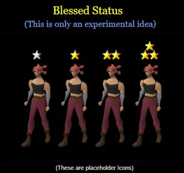
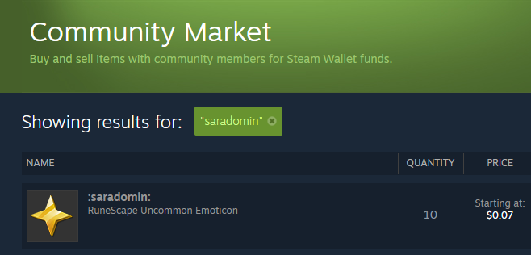
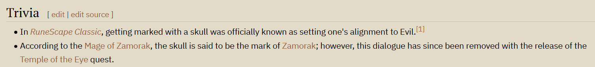
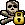
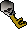
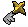
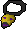

![Blessed Status]()
Blessed Status is my main suggestion, and the most important one. It covers almost all of the topics and problems I talk about in regards to Wilderness design.
Out of any suggestion I'm going to tell you today, aside from PvP Update Ranking Polls, this is the most impactful and important possible Wilderness update we could see.
Blessed Status is extremely simple. It's the opposite of Skulled Status.
The original idea for Blessed Status came from Soffan, formerly an artist at Jagex.
When I first saw this concept, it really sparked something for me, especially the rules by which it was set up.

I really think she has come up with the basis of something that could save the Wilderness, and I really believe we can make this a great success story.
I have since come up with my own version of it more tailored to the exact problems of the Wilderness we see today.
I also commissioned a RuneLite plugin from user opaf to visualize what this could look like in-game:
For the icon itself, it better be fitting for RuneScape, because all I did was resize the Saradomin Symbol emoticon from the official RuneScape Steam Marketplace to make this.

The Skull Status symbol represents Zamorak and an alignment towards evil, so Blessed Status makes sense as a Saradomin symbol and represents an alignment towards good.

There is a lot more I have to tell you about Blessed Status.
If I had to describe Blessed Status to someone in one sentence, I would say, "Blessed Status is PvM deaths in the Wilderness but the death fee is paid to the PKer and it costs a minimum risk of 100k."
However - I would caution anyone from trying to teach what Blessed Status is in just one sentence, because if you tell the OSRS community "Blessed Status is PvM death coffer for Wildy", players are going to make A LOT of assumptions about what that actually means or why it's important, and therefore will have more resistance to the idea.
That is why I put in so much work putting a video together to explain why this is what the Wilderness needs.
I think that simplistic way of describing it would make sense during a time where it's already established in the game, but for the purpose of pitching this as a new idea to Old School RuneScape, that is leaving out a lot of important details.
If it were already in-game, it would be a lot simpler to just try it and read a short NPC explanation that summarizes it.
But as a new concept I'm pitching to the developers of the game, they need to know a lot of the specific details about how it would work in extreme detail.
And for me to explain ALL of the considerations for the mechanics of Blessed Status, you will find that it's actually quite a complex, well thought-out proposal I've come up with.
I hope you will appreciate that, if I were to explain to you all of the extremely niche mechanics of how Skulled Status works, it would be equally as complex as the inner workings of Blessed Status.
For example, we all know that Skulling is applied by initiating attack on another player.
I hope you can appreciate that, although Skulling is extremely simple to understand, if you get down to the specifics, it is actually pretty in-depth and complex, requiring a lot of extremely specific rules that you don't really need to think about unless you're the guy who coded the system.
Similarly, I hope you can appreciate that Blessed Status is kind of a similar deal. There is a very simple way to summarize what it is and what it does.
HOWEVER, there is a big list of rules and mechanics for how it works.
And any Jagex developer that may listen to my video or read this page, is going to need to know all of the RULES of Blessed Status.
Likewise, you as a player really need to know a lot of the RULES of Blessed Status to understand what it means and how it would affect your gameplay, so let's go through this together.

Neutral Status Blessed Locks:

I just want to repeat one more time the most important rules of Blessed Status for you to remember.
Alright. This seems like a lot of rules, but trust me, it's simpler in practice and no more complex than the rules of Skulling are if you were to list all of the mechanics and rules of Skulling.
Blessed Status
 Skulled
Skulled
A friend of mine pointed out a potential exploit with Blessed Status and the 25% death fee.
You can trade alt/main at Tier 5 Blessed Status to have Tier 5 with less risk because when you die, you save 75% of your value.
The exploit would be to do your boss run, get Tier 5 and whatever loot. When you feel like banking, just have your alt kill you, you drop 25% to the alt, and can bank 75%.
Now the alt is in the Wilderness risking only 25% of the original 25%.
I've given some time to think about it extensively for a bit and write out some scenarios.
This "exploit" isn't actually a problem.
The reason being: the 25% fee (risk) that goes to your killer (your alt) drops in the form of a Blessed Key.
This Blessed Key is always lost on death, to the player who killed you. So losing that Blessed Key loses 100% of what's in the key, rather another 25% of it.
In other words, the alt would be in the Wilderness risking 100% of the original 25%.
What does this mean exactly?
It means trading kills between death/alt does not work as a way to reduce your risk without escaping the Wilderness, even if you get to keep your 5 stars between the two accounts.
I will, however, point out that the "saving 75% of your value" part is the point of Blessed Status. You are risking your 25% split, not the 75%. It is SUPPOSED to be kept even on death.
Main banks 1.125m (75%) on death. 375k (25%) goes to the killer (via key) + 5 stars transfer.
On its surface, it would seem like the risk of holding onto 5 stars is reduced by doing this.
The main keeping 75% is working as intended. That is normal in all scenarios.
But now the alt has a 375k key and 5 stars. So its risk is 375k. That's the same amount of risk as the main had to begin with.
And if you run this through 3-5 trades between alt/main, the Blessed Key is still always lost to the killer on death and you still have to escape the Wilderness with it, so it's fine.
Or for another example:
Main earns 10m. On death, you can save 7.5m, and your Blessed Key is 2.5m risk.
If you killtrade the Blessed Key to an alt, the alt still has to escape the Wilderness with that 2.5m key risk.
On the PKer's side, whether the PKer kills the main or the alt, the PKer gets 2.5m.
Perfectly fair!
If you just trade the 10m to the alt via a normal trade, that would no longer be a problem exclusive to Blessed Status :)

With Blessed Status introducing Wilderness Death Coffers, there's a natural opportunity for something like Blighted Coins. An untradeable currency that can exclusively be used to pay Blessed Status death coffer reclamation fees. They are worth the same as normal coins for the purpose of death reclamation, but cannot enter the main game economy in any other way.
By completing Wilderness activities without leaving or dying, Blessed players accumulate Tiers that increase loot and add bonuses, rewarding sustained engagement over constant worldhopping.

If -25% to +75% is "too good" for Blessed Status, we can always try different numbers, like -50% for Tier 0 and +50% for Tier 4-5.
Tiers are earned by accumulating stars through Wilderness activity. Each method below takes roughly an hour to complete all five stars via that path.
Note: It upgrades your stars. This is very important wording. It does NOT "steal" stars and "add" them to the number of stars you have, because a level 1 star is not worth the same as a level 5 star.
This means there is no special benefit to killing someone with less stars than you.
If there WERE a benefit to doing that, then there would be an exploit where you could have 5 alt accounts kill 1 boss each, and get Tier 5 Blessed Status on one account for 5 boss kills instead of the full 31 boss kills.
If Blessed Status were implemented, it would naturally follow that Skulling should still be the better money-making method. Blessed Status starts at -25% loot and caps out at +75% loot. Skulled players, by contrast, keep the full risk-reward ratio the Wilderness already provides, and that gap is intentional.
We already see this pattern with the Amulet of Avarice, which gives Revenant noted drops and a drop rate bonus, but only while Skulled. Blessed Status players explicitly cannot equip the Amulet of Avarice. The asymmetry is by design: reduced risk means reduced ceiling.
This creates a natural space for an item that takes that philosophy even further. The Ring of Greed, a concept originally proposed by YouTuber PoisonedPotion, would double your drops within the Wilderness while Skulled.
Where the Ring of Wealth passively improves your luck, the Ring of Greed would actively double your Wilderness loot, but only at the cost of being fully Skulled. The ring itself would be priced somewhere in the 1m-200m range, and is always lost on death.
PKers who already enjoy high risk high reward gameplay would find this far more appealing than Blessed Status ever could be. It gives the most committed, confident players a reason to stay in the Wilderness just as much as Blessed Status gives cautious players a reason to enter it.
Blessed Status addresses the risk problem for players who want a safety net. But the same core problem (risk not feeling worth the reward, and players worldhopping constantly) also applies to unskulled and skulled PvMers who prefer not to use Blessed Status. Forinthry Gates and Forinthry Artefacts are a separate extended proposal that addresses that player bracket.
The short version: Forinthry Gates are 6 or so locations scattered through the Wilderness where you can convert accumulated loot into protectable Forinthry Artefacts, essentially insuring the GP you've earned in the Wilderness without having to leave it. Forinthry Artefacts act as a sort of "5th protected item". They also let Tiered Blessed players log out or worldhop without losing their tiers.
Blessed Status was designed to offer a playable way to engage with the Wilderness for risk-averse players, designed by a risk-averse player.
It's meant to alleviate the biggest limiting factor of the growth of the Wilderness by offering a form of "medium risk, medium reward".
However, you may be asking yourself, "wait, doesn't the 100k minimum risk go against the wishes of a risk-averse player?"
"What if even 100k is too much for someone to risk? Especially for players who are completely new to RuneScape, who might see that as a LOT of gold?"
"Especially for new players who may be part of an important demographic of potential new players to get interested into PvP?"
Have I got the solution for you.
Beginner's Blessing is designed to help the pain point of a noob going into the Wilderness and losing all their stuff and having a bad first impression of the Wilderness.
It also serves as an introductory version of Blessed Status.
I think that covers the one gap in my idea that I had with Blessed Status, what if someone doesn't even want to risk 100k?
Beginner's Blessing also signals to PKers that that player has nothing expensive on them, discouraging PKers from killing those players, which is a win-win for both PKers and noobs.
Or y'know, PKers will kill anyone. But who knows, you might also decide to "adopt-a-noob" too.
Q: Is it possible to opt-out of Beginner's Blessing as a low level player?
A: Possibly. I have some ideas for that.
Q: Is it possible to opt-in to the Beginner's Blessing as a high level player?
A: Yes. Why not? You probably don't have any reason to do so, but you can. It'll just prevent you from getting anything good in the Wilderness for your level.
Q: What if you manage to kill a player with great level 40 or greater equipment?
A: They get to keep it. You can't loot it.
They can't loot yours either.
The maximum loot you can obtain in one kill is 100k.
This is the "Loot-Forfeiting Rule" at play but for Beginner's Blessing.
What's the progression ladder of risk with the existence of Blessed Status and Forinthry Artefacts?
Blessed Status (Below Level 10 Wilderness for reduced Death Fee)
Blessed Status (No Tier)
Neutral Status + Low Tier Forinthry Artefacts
Neutral Status
Neutral Status + High Tier Forinthry Artefacts
Blessed Status (Tier 5)
 Skulled Status + Low Tier Forinthry Artefacts
Skulled Status
Skulled Status + High Tier Forinthry Artefacts
Skulled Status + Low Tier Forinthry Artefacts
Skulled Status
Skulled Status + High Tier Forinthry Artefacts

Skulled Status + Amulet of Avarice
Skulled Status + Ring of Greed
High Risk Skull in High Risk Worlds
High Risk Skull in High Risk Worlds + Looting Bag
This creates an entire range of different levels of risk vs reward from low risk, low reward to very high risk, very high reward.
And when I say low risk low reward, I have to point this out so the PKers don't rage too much, I mean literally their possible earnings are capped.
Nowhere in this setup is there an intended "low risk, high reward" setup.
This "progression ladder" is also a "risk ladder" or "skill ladder".
If you are very comfortable and skilled in engaging with the Wilderness, you are a veteran player, then you will enjoy the high risk, high reward options.
For more high risk, high reward content ideas, I recommend checking out YouTuber PoisonedPotion's videos.
If you are new to RuneScape, new to PvP, new to the Wilderness, inexperienced, not sure what you're doing, now there are low risk, low reward and medium risk, medium reward options.
THAT IS WHAT THE WILDERNESS AND PVP IS MISSING.
THAT IS HOW YOU SOLVE TEN+ YEARS OF "RISK IS TOO MUCH", and "SKILL GAP TOO BIG".
STOP IT WITH ADDING MORE NEW PVM CONTENT THAT DROPS EXPENSIVE STUFF; MAKE THE CURRENT STUFF WORK BETTER!
HOW IS ADDING MORE OF THAT SUPPOSED TO WORK IF THE CURRENT STUFF ALREADY ISN'T?
THE COMMUNITY HAS BEEN SAYING THIS ON REPEAT FOR TEN+ YEARS.
If you are in sort of a middleground of skill, experience, and whatnot, or you're just a risk-averse main or ironman who enjoys PvP or Wilderness PvM, then Blessed Status is the perfect medium risk, medium reward option for you.
If you want to try something a little more challenging as a risk-averse player, but not on the Skulling-level of challenging, then Tiered Blessed Status and Forinthry Artefacts are options for scaled risk, scaled reward.
I have a risk calculator that details how much you'd be risking with various inventory setups in various situations.
It uses real inventory setups inputted from actual videos of people engaging with PvP and Wilderness content.
TL;DR, it works pretty much exactly as I intended. It's less risky than having No Status and Skulling, but far more risky than any non-Wilderness PvM you can do in the game.
There are niche scenarios where, it is actually cheaper to just 3-item instead of using Blessed Status.
This is usually when you are using really expensive equipment while Anti-PKing.
This happens because the design of Blessed Status mirrors Skulling - where you can only "Protect Item" for one item and the death fee applies to the rest.
That could change if Blessed Status mirrors Neutral Status instead, where your 3 most expensive items +1 are protected from having a death fee.
This would actually make Blessed Status have equal costs to Death's Office reclaims, as both are 5%, which could be a way to go as it makes for more consistency between the different options.
PvMers & Indiana Jones Playstyles
Can engage with Wilderness PvM without risking everything. After a death, you lose 5% of your gear value, not 100%, so you can re-enter 20 times as often after a loss. You don't even have to rebuy gear on the GE; reclaim it from Death's Office. Wilderness farming also becomes viable: even if you die with 600k in Rev loot, you keep 450k of it. You can finally earn back your risk within the same trip.
PKers
More players in the Wilderness means more targets. The death fee still pays out real GP via a Blessed Key on every Blessed kill, and a minimum 100k is always guaranteed. Compare that to hunting 3-itemers carrying a spade. A less empty Wilderness is strictly better for PKers. Tiered Blessed Status also lets you see at a glance who has been in for a long time and is carrying more accumulated loot.
Can learn Wilderness PvP and anti-PKing at a fraction of the cost. More importantly, they can learn it in the actual Wilderness against real players, not in a sanitised minigame that builds habits that don't transfer. Blessed Status players fighting each other creates a natural bracket of similarly inexperienced players to learn against, without being completely set back by a veteran every single time.
An ironman losing items in the Wilderness isn't losing GP. They're losing hours of farming time that can't be bought back on the GE. Blessed Status replaces that catastrophic loss with a manageable death coffer fee. Ironmen make up roughly 30% of the OSRS playerbase, and right now they have almost no reason to vote yes on any PvP poll. Blessed Status changes that directly.
 Clans
Clans
Saradomin alignment at the Forinthry Castle grants free Blessed Status to all clan members, enabling non-PvP clans to safely farm Wilderness World Bosses without extreme item risk. Uhhh... this is a completely separate proposal that builds upon Blessed Status.
More Wilderness activity means more player retention, more bonds sold, more subscriptions renewed. The 100k activation cost functions as a gentle GP sink, sunk from the game whenever a Blessed player doesn't die to another player. Blessed Status doesn't require changing any existing weapon or armor stats, any loot tables, or any current Wilderness mechanics. It's a new overhead status that coexists alongside skulling and 3-iteming and can be rebalanced independently after release.